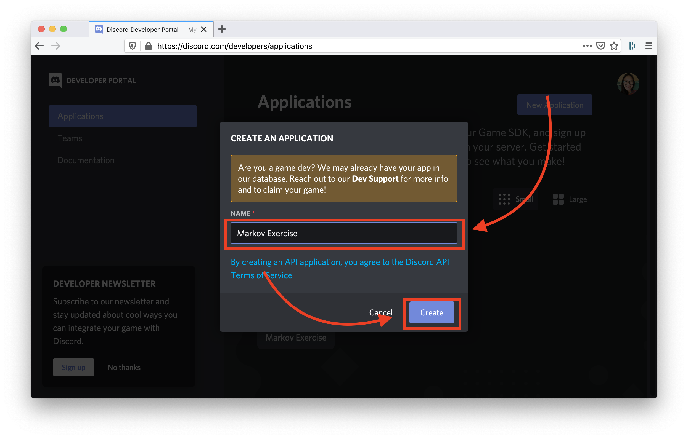
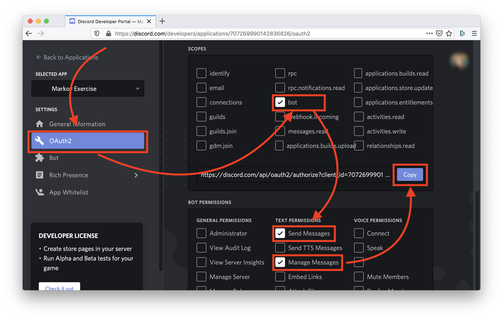

Markov Chains: Discord
Introduction
This exercise is all about having you practice how to create a virtual environment, use it to install external Python libraries, and keep secrets hidden from Git and GitHub. It’s important that you develop muscle memory around this process — you’ll be doing it a lot once we start learning to build web applications.
Besides all of the above, you’ll also hook your Markov chain-based text generator script to Discord using a libarary called discord.py — a Python wrapper for the Discord API. Like most Python libraries, discord.py was created using object-oriented design principles so you’ll get some practice instantiating objects and calling methods as well.
You’ll need a fully-functioning Markov chain program to proceed. Feel free to use your program from the previous lab. Otherwise, you can use the one we’ve included for you (it’s called markov.py).
Setup
Download the materials for this exercise here.
Get an Auth Token & Keep it Secret
Create a Bot Account on Discord
You’ll have to create a bot account on Discord to be able to use discord.py and the Discord API in general.
First, make sure you’re logged into the Discord website. Then, click on this link to go to the Discord Developer Portal – Applications page.
Once you’re on the Applications page, click New Application. A popup window will appear to prompt you to name your application. The application name is there to help you distinguish between one app and another, so you can use whatever name you’d like as long as it’s memorable.
After naming your app, click Create.
Now, navigate to the Bot section in the sidebar and click the Add Bot button on that page. A window will appear to ask you if you really want to create a bot. Click Yes do it!.
On your bot’s page, give it a username — you should give it a username that’ll
make it easy to find your bot out of a server of many bots. Something like
YourName's Markovbot or Yourname Markovbot (if you share the same name
as another student, you should add your last initial to the bot’s name) should
do the trick.
After naming your bot, click Save Changes. Now you can copy your bot’s authentication token by clicking on Copy.
Keep Your Token Secret
Your bot’s token is essentially its login password so you want to make sure it won’t get leaked publically. You’ll do this by creating a shell script called secrets.sh.
Create a file called secrets.sh and open it in your editor. In the file,
create an environment variable called DISCORD_TOKEN and set its value to
your bot’s token that you copied from Discord. When you’re done, secrets.sh
should look something like this:
export DISCORD_TOKEN="pretend this is a real token"
Shell syntax
Bash syntax is different than Python syntax. In Bash, it is not valid to have
spaces before or after the equal sign (=), even though that’d be good
style in Python. Also, the double-quotes are syntactically significant and
different from single-quotes so make sure you use double-quotes as well!
Now we have to keep secrets.sh out of Git so you don’t accidentally push it to GitHub. If you haven’t already initialize a Git repo for this exercise, go ahead and create one now. Also, create a repo on GitHub for this exercise as add it as a remote.
Before you start git add-ing files, you’ll want to make a .gitignore file to prevent you from adding files like secrets.sh, env or .pyc files. Create a file called .gitignore and edit it in your editor so it looks like this:
secrets.sh
*.pyc
env
If you run git status, your output won’t list secrets.sh or any other files that match the names in .gitignore. Now you’re safe to add the files you do want to track in Git (including .gitignore!). Make an initial commit and push your changes to GitHub. There, confirm via your web browser that secrets.sh wasn’t uploaded to your GitHub repo.
Install Project Dependencies
Next, you’ll install discord.py in a virtual environment.
Any time you want to work on projects that requires external libraries (libraries that aren’t a part of Python’s standard library), you’ll create a virtual environment for each one. That way, you can keep one project’s dependencies separate from another project’s dependencies.
Create and Activate a Virtual Environment
To create a virtual envrironment, make sure you’re in your project folder and run:
macOS
$ virtualenv env
Windows
$ virtualenv env --always-copy
Before you can install or run anything, you’ll need to activate your virtual environment:
$ source env/bin/activate
Install discord.py
discord.py is a Python wrapper for the Discord API. In this case, a Python API wrapper is a library that makes it easier to use an API (in this case, Discord’s API) in Python.
Since discord.py is published in the Python Package Index (PyPI), we can install it with pip3. You can either find out how to install anything on PyPI by checking out the package’s homepage on PyPI. At the top of the page, you’ll see an example pip install command; in this case, we should run the command below to install discord.py:
Make sure your virtual environment is active!
You can tell that you’re in a virtual environment by looking at your
command line prompt. If you see an (env) somewhere in there, you’re good
to go.
(env) $ pip3 install discord.py
Make requirements.txt
Whenever you update a project’s external dependencies by installing new ones or updating old ones, you should create a new requirements.txt file. In the Python world, developers use a file called requirements.txt to document the libraries needed for a project. This makes it easy to get the project running on another computer.
The standard way to generate requirements.txt is by redirecting output from pip3 freeze. Do that now by running:
(env) $ pip3 freeze > requirements.txt
The command above will create a new file called requirements.txt (or overwrite an existing one). Output its contents to the terminal with cat:
(env) $ cat requirements.txt
aiohttp==3.6.2
async-timeout==3.0.1
attrs==19.3.0
chardet==3.0.4
discord.py==1.3.3
(...snippet)
requirements.txt is a list of the names and version numbers of all Python libraries required for your project to run; you should see discord.py in that list as well as the libraries that discord.py needs to run.
You’ll want requirements.txt included in your repo, so use Git to add the file, commit it, and push it to GitHub.
Make a Discord Bot
Your next task is to make a Discord bot that will reply with generated text (using the functions from the Markov Chains lab) any time someone sends it a private message. Once you’ve gotten that working, you’ll be able to add more features and interactivity!
Connect Your Bot to Discord
If you aren’t a mod on any Discord servers you are comfortable creating a bot for, you will need to create a new one for this next part. It’s really simple, just click the “+” icon at the bottom of your list of servers, and “Add a Server”. Just ensure you have full permissions so you can properly connect it to the Discord API.
The last thing you’ll have to do in the Discord Developer console is generate a URL that will add your bot account to your Discord server. Otherwise, you won’t be able to run and test your code!
Click here to go to the Applications page. In the sidebar, click on OAuth2 and look for a section called Scopes.
There, click on the box for bot — this will give your application bot-related permissions. After the Bot Permissions box appears, check Send Messages and Manage Messages — your bot will need to read and write messages.
Finally, click on Copy to copy the generated URL and paste it into your browser. Click through the prompts that appear to invite your bot to your Discord server. When you’re done, you should see your bot in the server’s Member List.
Check out the Docs
You won’t be able to use discord.py until you know how to use it! Most libraries have their own websites where you’ll find tutorials on how to get started, documentation, and other useful technical details.
discord.py‘s homepage is at discordpy.readthedocs.io.
You’ve already installed discord.py, so you can skip the section on
Installing and start reading the Quickstart page — like the name
implies, it’s a short read and it will give you enough information to get
started with this lab. Keep an eye out for explanations of how to send your
authentication info through the API and how to send messages. Also, you’ll see
two new keywords in the Quickstart — async and await. Don’t worry
about what they do for now — we want you to use your preexisting knowledge of
Python to figure out how to make something work even when you’re not
completely familiar with code you’re given.
Respond to Messages with Text
Refer to the example code in the Quickstart page to create a bot that will respond with text from a Markov chain whenever it recieves a message. Add your code to markov.py — feel free to use your own markov.py or the one we’ve included with this exercise. To test your code, run markov.py. Then, send your bot a message on Discord. You can exit markov.py with Ctrl-c.
If you need a hint, we have a hint on how to get started and another on how to use your secret token from secrets.sh:
How to get started
First, you’ll need to import the os module (to access os.envrion, which you’ll use to access the values in secrets.sh) and the discord module. Add the import statements to the top of your file:
import os
import discord
Then, add this snippet to the end of your file:
client = discord.Client()
@client.event
async def on_ready():
print(f'Successfully connected! Logged in as {client.user}.')
@client.event
async def on_message(message):
if message.author == client.user:
return
# TODO: replace this with your code
client.run('replace this with your token from secrets.sh')
The rest is up to you ☺
How to use secrets.sh and os.environ
You can retrieve the value of any environment variable through os.environ. It’s a dictionary-like object, which means you can index into it:
os.environ['DISCORD_TOKEN']
Or use methods like dict.get:
os.environ.get('DISCORD_TOKEN')
Doing one of the above will return your token as a string that you can pass to client.run:
client.run(os.environ['DISCORD_TOKEN'])
Remember — os.environ won’t have a key called 'DISCORD_TOKEN'
until you run secrets.sh once (before you run your file in Python):
(env) $ source secrets.sh
You’re finished with the Markov Discord exercise! Great work.